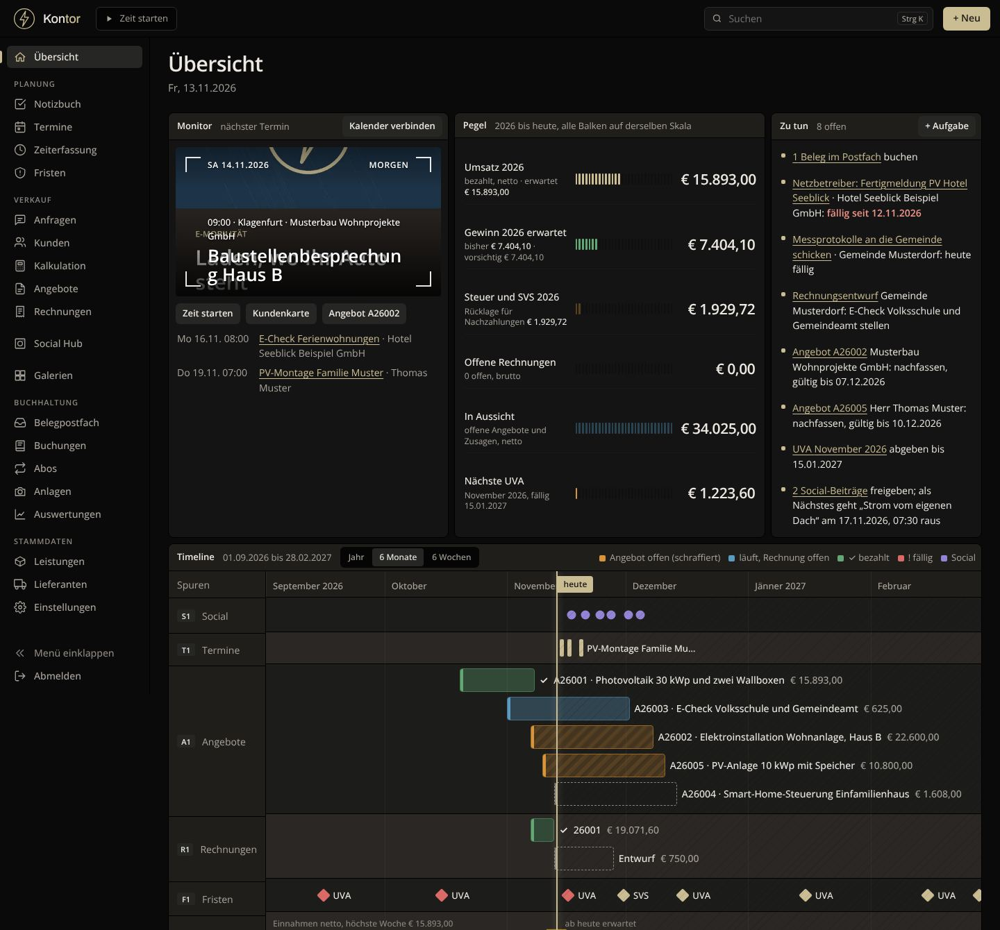
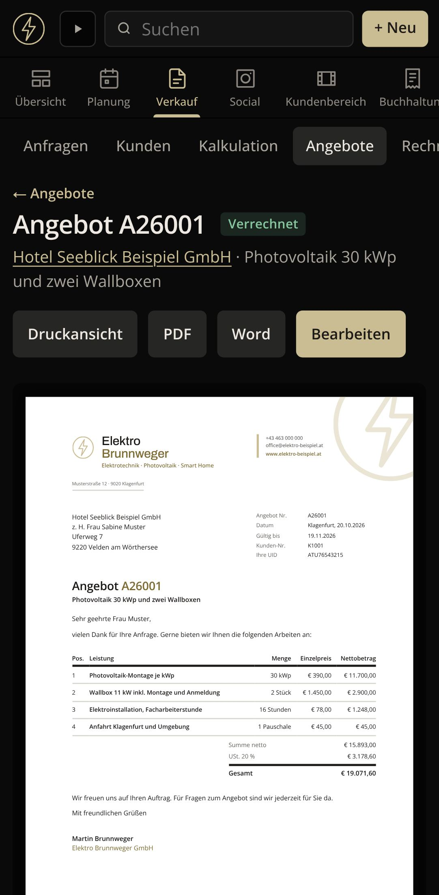
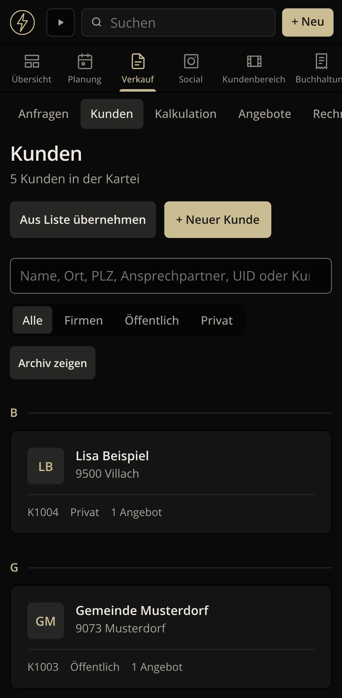

Auftrags- und Angebotsverwaltung
Anfragen erfassen, kalkulieren, Angebote und Rechnungen als PDF und Word erstellen, Zahlungen verbuchen, mit Ihrem Briefpapier und Ihren Textbausteinen.
Start › App-Entwicklung
App- und Softwareentwicklung · Klagenfurt, Villach, Kärnten
Sie möchten eine App entwickeln lassen oder individuelle Software statt Excel-Listen? Wir entwickeln Anwendungen nach Ihren Abläufen, nicht umgekehrt: für Anfragen, Angebote, Aufträge, Rechnungen, Kundenportale und Dashboards. Am Computer und am Handy, mit Ihren Daten an einem Ort.
Woran Betriebe heute Zeit verlieren
Anfragen kommen per E-Mail, Angebote entstehen in Word, Rechnungen in einer Vorlage, Zeiten in einer Tabelle und die Buchhaltung in der nächsten. Dieselben Daten werden mehrfach eingegeben, und niemand sieht auf einen Blick, wo ein Auftrag gerade steht.
Eine eigene Web-App verbindet diese Schritte: Aus der Anfrage wird mit einem Klick das Angebot, aus dem Angebot die Rechnung, aus der Zahlung die Buchung. Jeder sieht, was zu tun ist, und nichts geht verloren.

Was wir entwickeln
Jede Lösung beginnt bei Ihren Abläufen. Diese Bausteine setzen wir am häufigsten ein, einzeln oder als gemeinsame Plattform.
Anfragen erfassen, kalkulieren, Angebote und Rechnungen als PDF und Word erstellen, Zahlungen verbuchen, mit Ihrem Briefpapier und Ihren Textbausteinen.
Ein eigener Bereich für Ihre Kunden: Dateien abholen, auswählen, kommentieren und freigeben, statt Anhänge und Download-Links per E-Mail.
Umsatz, offene Angebote, fällige Rechnungen, Fristen und Termine auf einer Seite, mit Zeitleiste und Auswertungen nach Monat, Kunde und Leistung.
Zeiten mit Start und Stopp je Kunde und Auftrag, Termine aus Ihrem Kalender, Stunden direkt in die Rechnung übernehmen.
Belege per Foto oder E-Mail sammeln, Buchungsvorschläge, Journal und Auswertungen, aufbereitet für Ihre Steuerberatung.
Beiträge für Instagram, Facebook und LinkedIn planen und freigeben, dazu Aufgaben, Notizbuch, Vorlagen und Checklisten: Helfer, die im Alltag Zeit sparen.
Dashboards und Kundenportale
Ein Dashboard zeigt, was heute zählt: nächster Termin, offene Aufgaben, Umsatz bis heute, Angebote in Aussicht und Fristen. Die Zeitleiste ordnet Angebote, Rechnungen, Termine und Zahlungen über Monate an, damit Engpässe früh sichtbar werden.
Im Kundenportal sehen Ihre Kunden ihre Projekte, wählen Fotos oder Dateien aus, kommentieren und laden in der passenden Qualität herunter. Sie sehen sofort, was neu ist.
Kundenportal in der Referenz → Social Hub in der Referenz →
Ablauf
Wir gehen gemeinsam durch, wie ein Auftrag bei Ihnen heute läuft, und halten fest, was bleiben soll und was einfacher werden muss.
Sie bekommen früh einen klickbaren Entwurf der wichtigsten Ansichten und können ihn mit Ihrem Team ausprobieren.
Wir programmieren KI-gestützt und liefern in Schritten, die jeder für sich nutzbar sind. Sie testen mit echten Fällen, wir verbessern laufend.
Daten übernehmen, Team einschulen, live gehen. Danach Wartung, Updates und neue Funktionen.
Offen gesagt
Den Programmcode unserer Apps schreiben wir zum großen Teil mit KI-Programmierassistenten, etwa Claude Code von Anthropic. Das sagen wir offen dazu, denn genau das macht individuelle Software heute auch für kleinere Betriebe leistbar.
Ihre Abläufe verstehen, festlegen, was die App können soll, Aufbau und Datenmodell planen, jede Änderung lesen und prüfen, testen, auf Ihren Server bringen und betreuen. Die Verantwortung für den Code liegt bei uns.
Sie schreibt Code nach unseren Vorgaben, schreibt die automatischen Tests mit und hilft, Fehler zu finden. Was sie liefert, geht erst live, wenn es unsere Prüfung und alle Tests besteht.
Schneller ein erster nutzbarer Stand und mehr Zeit für Abstimmung, Tests und Feinschliff. Entwickelt wird mit Beispieldaten, nicht mit Ihren Kundendaten, und die fertige App läuft ohne KI-Dienst im Hintergrund, außer Sie wünschen sich KI-Funktionen.
Was Sie bekommen


Häufige Fragen
Das hängt vom Umfang ab. Nach dem ersten Gespräch und der Prozessanalyse bekommen Sie ein verbindliches Angebot für die erste Etappe, die bereits für sich nutzbar ist. So wissen Sie vorab, was Sie bekommen und was es kostet.
Für die meisten Betriebe reicht eine Web-App: Sie läuft im Browser am Computer, Tablet und Handy und lässt sich am Handy wie eine App auf den Startbildschirm legen, ohne App Store und ohne Updates über den Store. Braucht Ihr Projekt Funktionen, die nur eine App aus dem Store bietet, besprechen wir das im Erstgespräch.
Ja. Kundenlisten, Leistungen und andere Daten aus Excel oder CSV übernehmen wir beim Start. Umgekehrt lassen sich Ihre Daten jederzeit wieder exportieren, etwa als Excel, CSV oder PDF.
Wir planen Datenschutz von Anfang an mit: Anmeldung mit Passwort und zweitem Faktor, verschlüsselte Verbindungen, Rollen für Mitarbeitende, regelmäßige Sicherungen und ein Hosting, das zu Ihren Anforderungen an die DSGVO passt.
Zum großen Teil ja. Wir programmieren mit KI-Assistenten wie Claude Code: Wir planen, beschreiben jeden Schritt und prüfen das Ergebnis, die KI schreibt den Code und die Tests dazu. Live geht nur, was unsere Prüfung und alle automatischen Tests besteht. Die Verantwortung und die Betreuung bleiben bei uns.
Wir bleiben Ihr Ansprechpartner: Wartung, Sicherheitsupdates, Fehlerbehebung und neue Funktionen, wenn Ihr Betrieb wächst oder sich Abläufe ändern.
Erstgespräch
Beschreiben Sie uns einen Ablauf, der Sie Zeit kostet. Wir sagen Ihnen ehrlich, ob sich eine eigene App lohnt oder ob eine einfachere Lösung reicht.